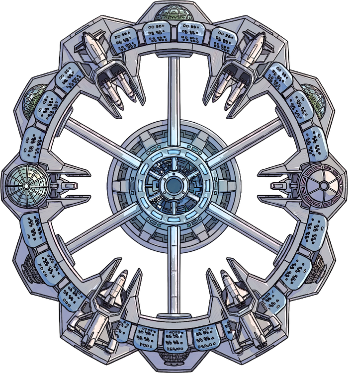
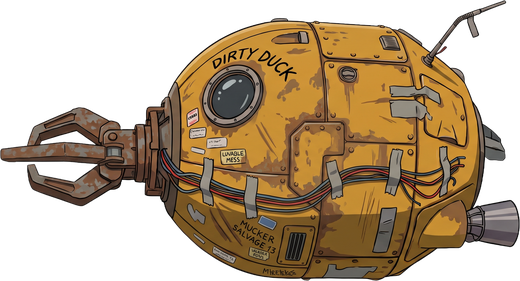
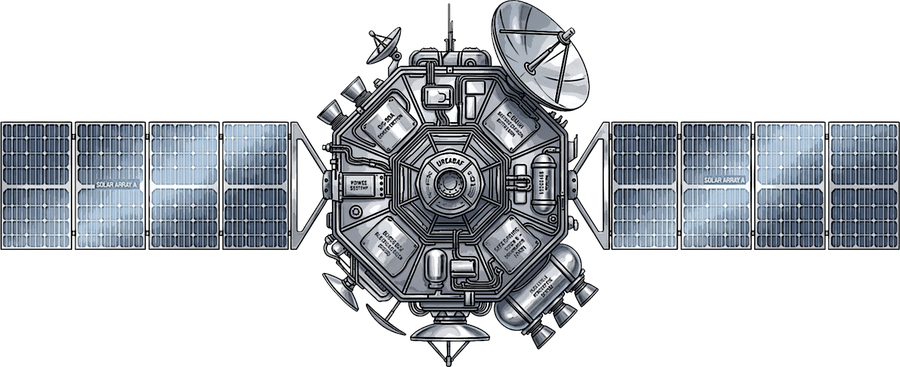
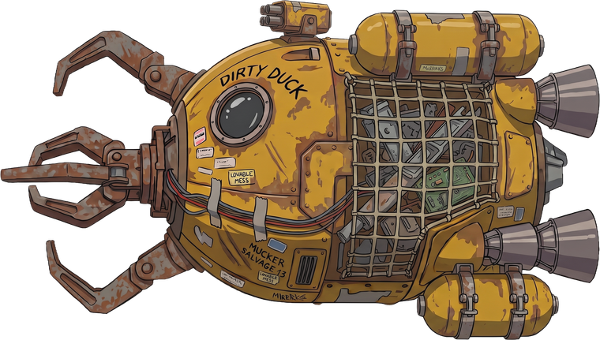
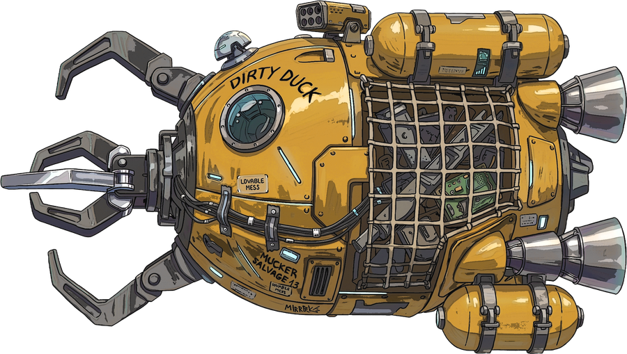

How to play
한 바퀴, 2~3분
정거장에서 출발해 화물을 싣고 정거장으로 돌아오면 팔린다. 이 한 바퀴를 돌 때마다 배가 조금씩 커진다.


1
출격
마우스 포인터 쪽으로 배가 움직인다. 포인터가 멀수록 빠르고, 가까이 두면 멈춘다. WASD로도 움직일 수 있다. 돌아올 연료부터 계산한다.


2
붙어서 연다
위성이나 로켓 가까이 가면 자동으로 붙고 화물칸이 열린다. 열린 칸을 클릭하면 싣는다. 열수록 시끄러워지고, 소음을 쫓는 스위퍼가 온다.
 진짜 원두 커피78,000 CR
진짜 원두 커피78,000 CR 종이책90,000 CR
종이책90,000 CR 20세기 담배130,000 CR
20세기 담배130,000 CR 골든 레코드정거장 감정 불가
골든 레코드정거장 감정 불가3
돌아와 판다
정거장에 대면 화물마다 판다. 아니면 락커에 둔다. 연속으로 살아 돌아오면 값을 더 쳐준다.

4
키운다
판 돈으로 배를 바꾼다. 스크랩 드론, 수거정, 화물선. 화물선은 차폐가 있어 더 높은 궤도로 갈 수 있고, 거기에 잃어버린 내 배가 있다.
연료가 곧 목숨
움직여도 줄고 부딪히면 샌다. 0이 되면 견인되고 싣고 있던 화물을 잃는다.
스위퍼는 소음을 쫓는다
열수록, 밀수록 시끄럽다. 엔진을 끄면 파편처럼 조용히 흘러간다.
붉은 칸은 장비
요격 포탑, 부스터, 택배 상자. 팔지 말고 슬롯에 단다. SHIFT 부스터, SPACE 택배 상자.